Batch 1 mock: foundation
This page shows the batch 1 mock for the owner to confirm: the UI font, the ten-step ramp, the neutral pressed state, the badges, the footer links, the art well with the kind glyph, and the two site share cards. Batch 1 changes no layout and no label.
Status: approved by the owner (2026-10-29), with two changes drawn on this page since: the linear page ground on every mock of 1-5 and 7, and the kind glyph on the print card.
The page ground
Every state of mocks 1-5 and 7 and both share cards now stand on one linear ground,
linear-gradient(180deg, var(--bg2) 0, var(--bg) 520px); the two radial
washes of tokens.css body are gone (owner, 2026-10-29).
The face in these renders
Every PNG on this page renders Source Sans Pro TTF files
(SourceSansPro-Regular, -SemiBold, -Bold,
-Black) from C:\Users\Ignat\.dhloot\notes\57\fonts\, outside
the checkout. Source Sans Pro is the earlier release name of Source Sans 3. No Source
Sans 3 file is on this host: @fontsource-variable/source-sans-3 is not
installed yet, and no system face has that name. Batch 1 ships the package for the app
and the static Source Sans 3 Regular and Semibold TTF faces for the share cards (owner,
Q1). Small metric differences between the two releases are possible, so step 9h compares
the real cards with these PNGs by eye, not by pixel.
The site share cards (1200 x 630)
Drawn as the owner chose for Q2: the page ground (the linear --bg2 to
--bg ground over 520 px), the title in --txt, «DAGGERHEART» in
the muted brand-line colour --muted2, gold on the star only, Source Sans,
EN "armor" (Q3). The layout, the sizes and the positions of
shareCardSvg() stay.
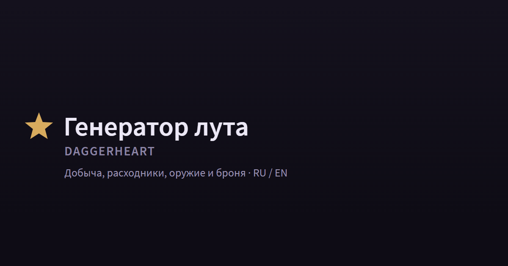
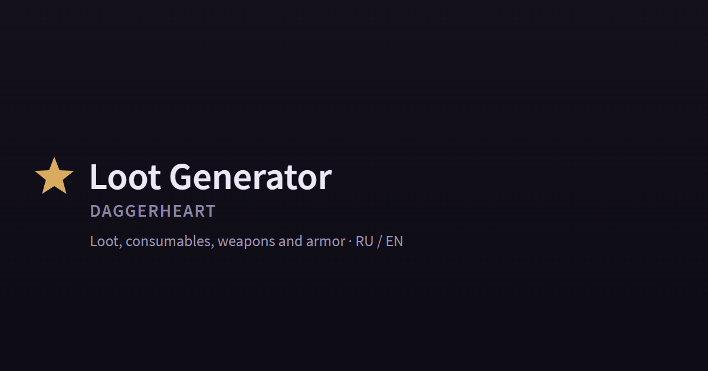
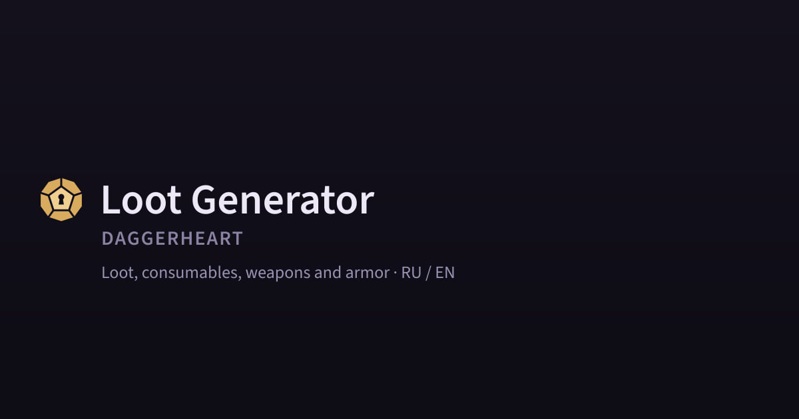
Plan defect found: shareCardSvg() also draws a 6 px gold rule along
the bottom edge (lib.mjs,
<rect y="624" ... fill="#d8ab5e"/>). Plan step 9c says "gold only on
the star" but does not name the rule. The mock removes it; step 9c needs one line that
removes it too.
Owner questions
Share card text (approved with the mock: keep the text)
Today both cards read «Генератор лута» / "Loot Generator", «DAGGERHEART», and a subtitle that lists the kinds of records. The plan keeps the text and changes only "armour" to "armor".
Keep the text
RU: «Добыча, расходники, оружие и броня · RU / EN». EN: "Loot, consumables, weapons and armor · RU / EN".
Trade-off: The subtitle says what is in the data, not what a person does with it.
Why: The text is true and short, and a link preview keeps the cached card for a long time (META.md section 8), so a change of words gains little.
Name the three jobs
RU: «Бросок лута, все таблицы и поиск · RU / EN». EN: "Loot rolls, every table and search · RU / EN". It matches the batch 2 header.
Trade-off: A new product sentence in both languages; the kinds of records are no longer named.
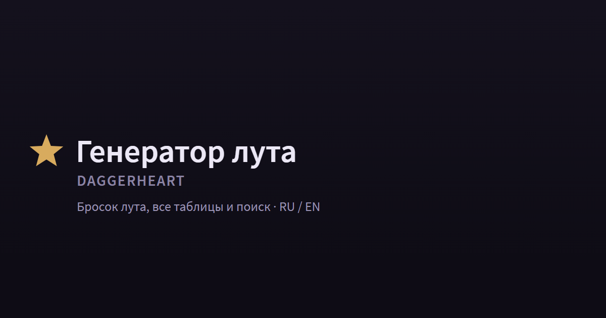
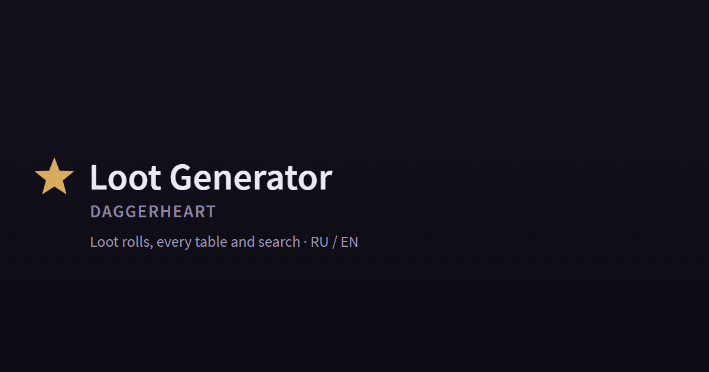
The kind glyph on the black-and-white print card - chosen (owner, Q1b.1)
Owner, 2026-10-29: the no-picture state is the kind glyph on print too, in colour and
in black and white, and the _none files go. The colour card has an art
block, so the glyph takes its place (the print state below). The black-and-white
layout has no art block for any record (PrintCard.svelte draws
pc-art only when not bw), so a no-picture record already
prints with no pedestal there.
Black and white stays as it is
The colour card shows the glyph; the black-and-white card is unchanged, with no picture for any record.
Trade-off: In black and white a no-picture record looks like every other record: no glyph.
Why: The black-and-white layout (Figma 3773-90792) is product law; it has no art block to put the glyph in, and it already shows no pedestal.
Add the glyph to black and white
A small kind glyph in the black-and-white card, for every record or for no-picture records only.
Trade-off: A change to a print layout: it needs its own print batch with the print checks and a Figma node, as the plan says for a print font change.
States
Each state at 360 and 1180 px in RU and EN. Click a picture for the full PNG; the ru/en
links open the live mock (state.html?s=<state>).
The print card with no picture · ru · en
Colour: the kind glyph on a dark well in the art block; the rest of the 63x88 mm card is the capture of PrintCard.svelte. Black and white: unchanged (see the question above).
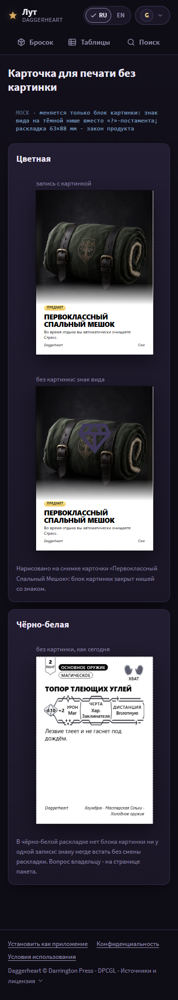
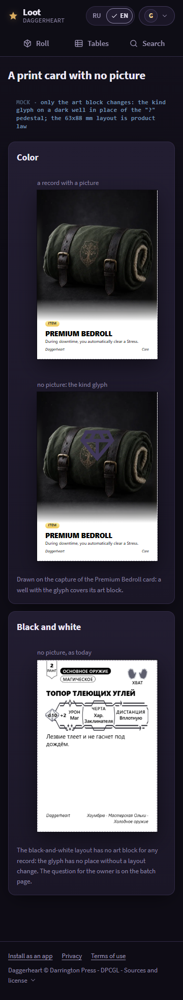
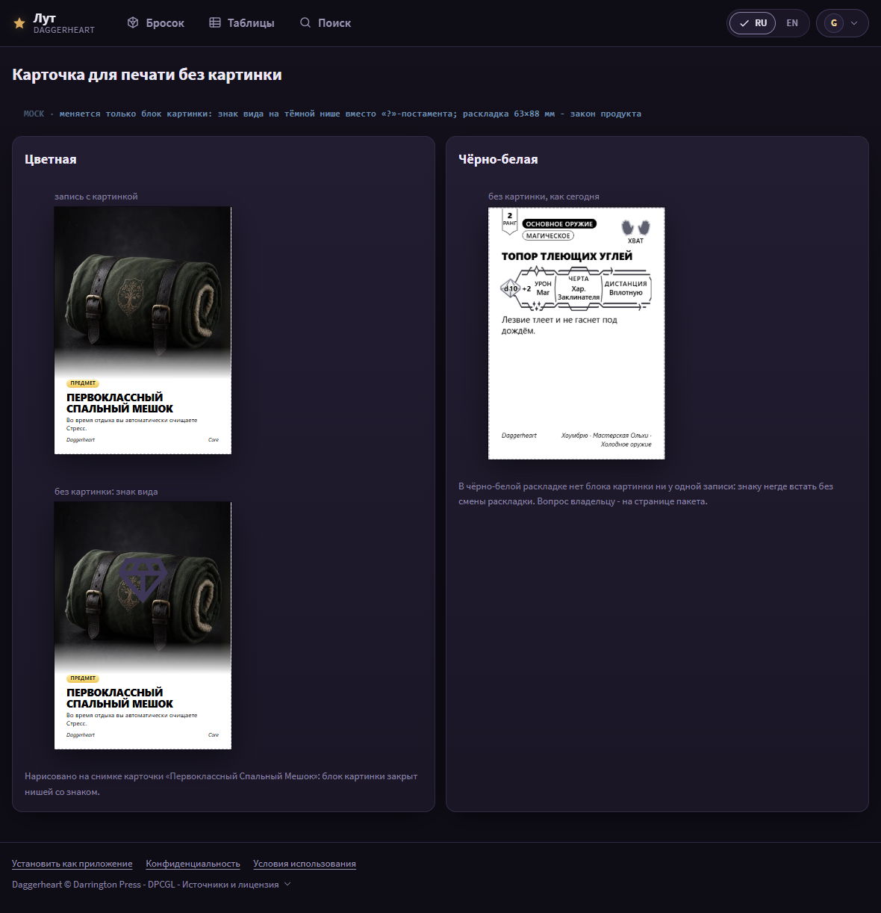
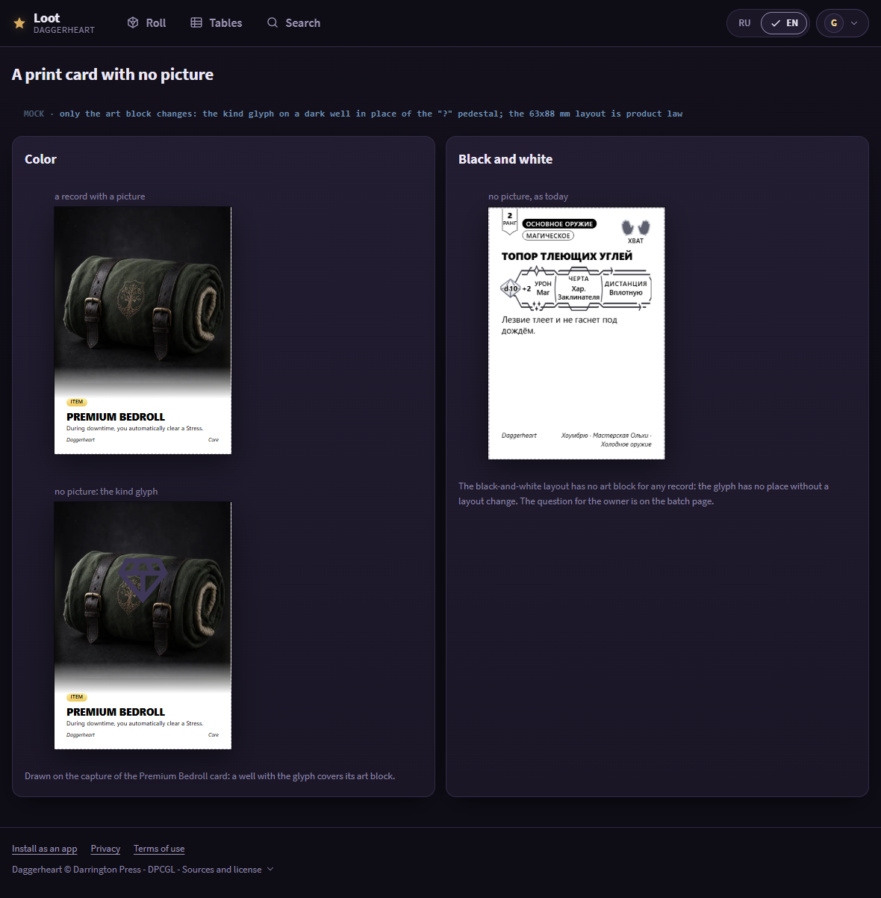
The font and the ten steps · ru · en


The neutral pressed state, gold, badges, focus · ru · en

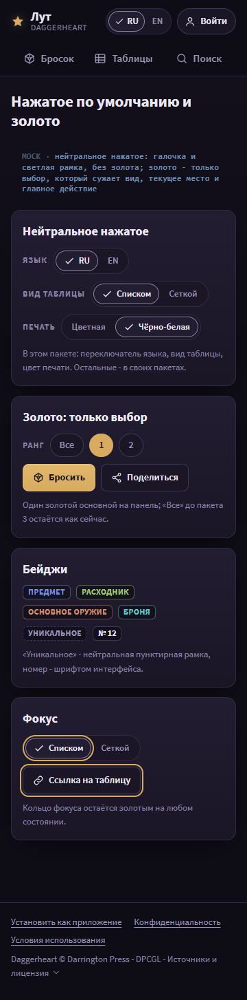

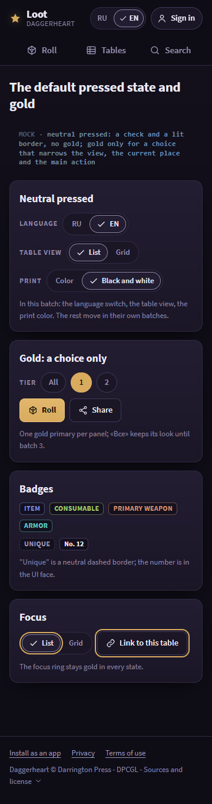

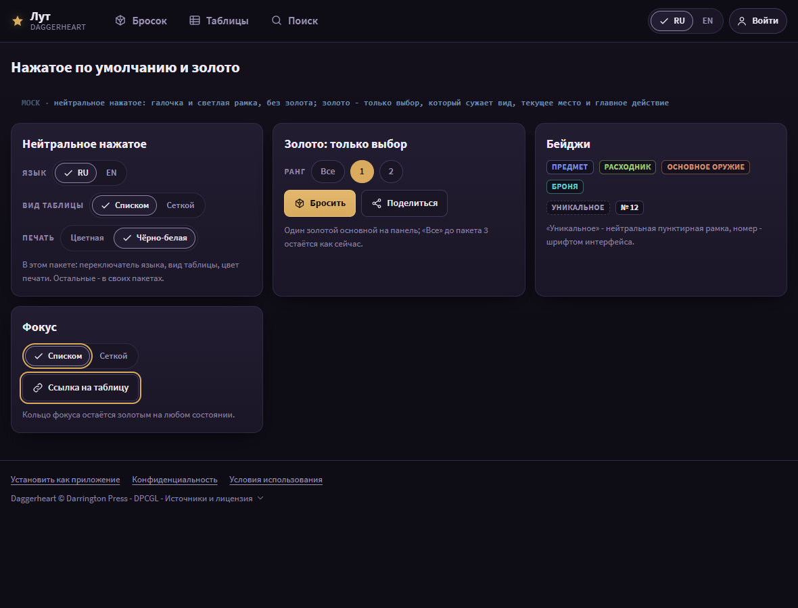

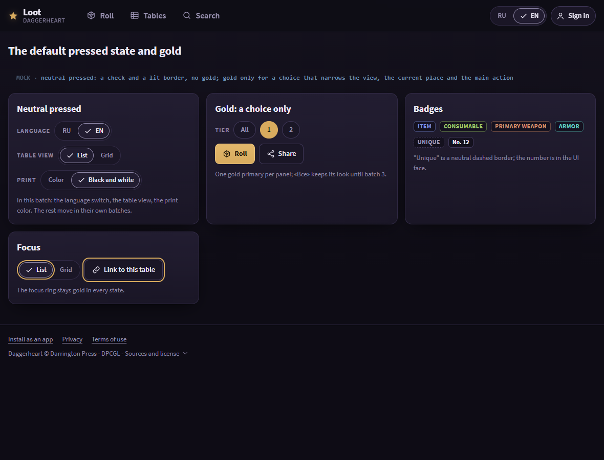
The art well and the kind glyph on the five screen surfaces · ru · en

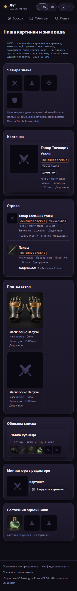

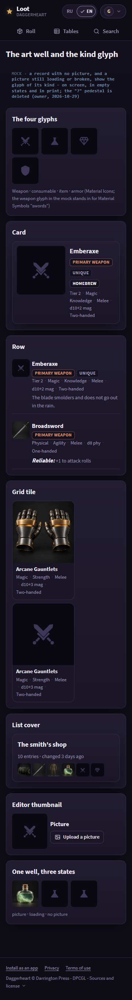

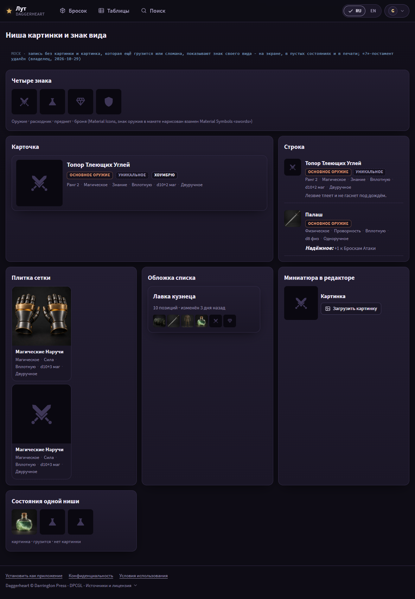

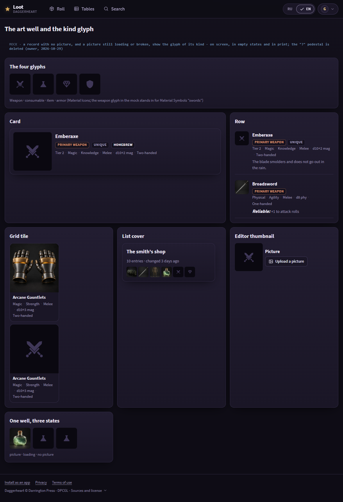
Shared patterns and their owner folder
-
Batch 1 (
mocks/1/): the type ramp, the neutral pressed state onSeg(the language switch, the table view, the print color), the badges, the footer links, the art well and the kind glyph. - The «Все» chip and the other default chips keep their gold until batch 3 (plan section 10, interim departure); this page shows the batch 1 callers only.
Changes from direction R and from plan.md
-
The neutral pressed variant is drawn on
Segonly (the language switch, the table view, the print color), as plan review R4 asks; theChipvariant is batch 3's. -
The kind glyphs are the filled Material Icons paths of plan section 10
(
shield,science,diamond,check). The weapon glyph is a stand-in drawn for the mock: batch 1 copies the real Material Symbolsswordspath. R drew stroke icons. - The footer shows the real DPCGL summary line («Источники и лицензия» / "Sources and license", American spelling) under the three links.
- Every EN string uses American spelling (owner, Q3): "color", "armor", "smolders", "Traveler's".
- The color print card of a no-picture record is drawn again in mock 1b with the lighter print well (owner, 2026-10-29).
Impeccable critique (Clarity Rule)
-
The stand-in weapon glyph reads as a plain cross at 36 px (the list cover). Batch 1
checks the real
swordspath at 36 px before it ships. - The badge (11.5 px) and the section label (12 px) are only half a step apart; weight and tracking keep them apart in the specimen. No change.
-
The muted brand line on the share card measures about 5.4:1 on
--bg; the subtitle in--mutedabout 6.5:1. Both pass. - Clarity Rule: no help text, tooltip or legend in the proposed UI. The MOCK captions are mock chrome.
-
Detector (
impeccable detect --jsonover the static files): 4 findings, none in proposed UI.ua.css: the mock address colour#8fa9c4(mock chrome) and20px(the new--t-sectionstep, which DESIGN.md gets in batch 1);share.html: the black page behind the card (mock chrome) and the family "Source Sans 3" (DESIGN.md gets it in batch 1). No ignore was added. The state pages draw with JavaScript, so the static detector cannot read them; the critique above is the visual pass.
Unit A files
The state pages of 1, 2, 3, 4, 5 and 7 load direction R read-only through
<base href="../direction/R/">, then the unit A layer in this folder:
ua.js and ua.css (the batch 1 and 2 system every later mock
inherits) and states-a.js (the states of R with the paths of main and the
batch hooks). Each batch adds b<N>.js. Re-render:
node issues/57/mocks/1/render.mjs 1 2 3 4 5 7 (puppeteer; it reads
shots.json in each folder).